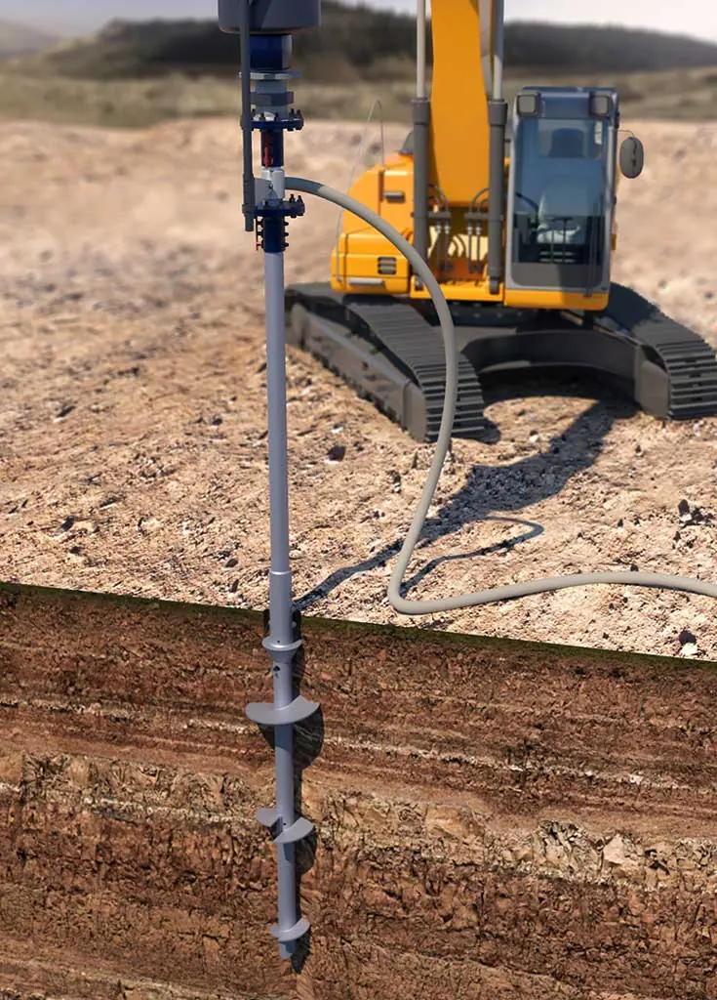
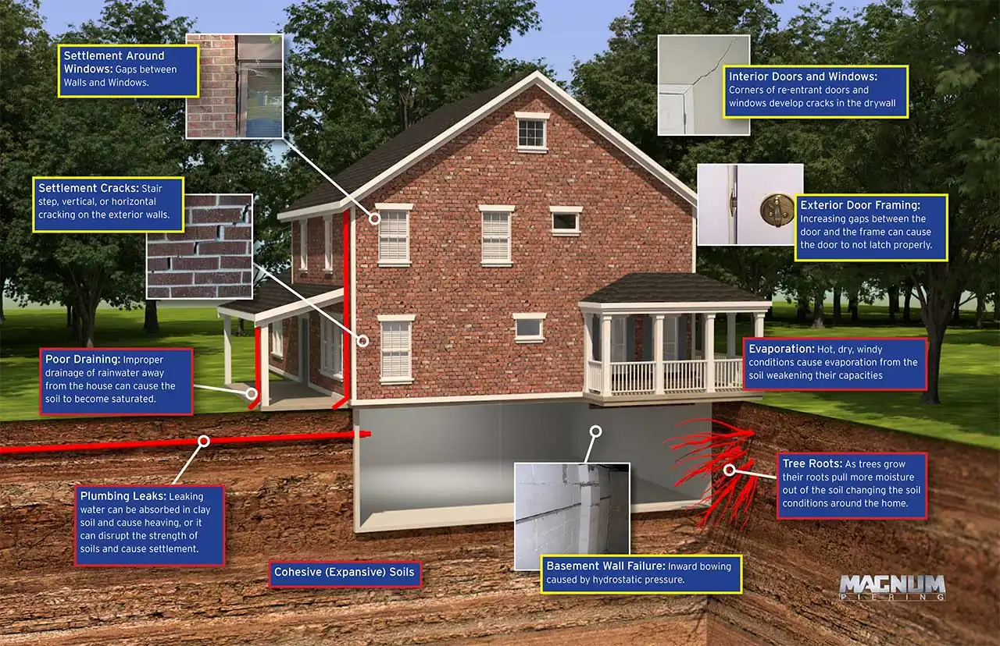

Share this Article
A strong foundation is essential for any structure, no matter the size. However, over time, the land supporting the building from below can change. For example, dirt may shift, natural disasters can corrode land away, or the constant weight could cause the foundation to crack and warp. Most foundation repair experts will suggest using helical piles to correct this issue – so what are helical piles?
Helical piles are essentially large screws made of high-strength steel, which help secure the foundation into the ground below. The pile is drilled deep into the ground, and the tops are covered with concrete to form the building’s foundation.
Helical piles are available in a range of sizes, depending on the structure type and design. They are also known by several names, including:
- Helical piers
- Helical anchors
- Screw anchors
- Screw piles
- Screw cylinder anchors
- Helical foundations
The first helical pile was designed 200 years ago by a blind engineer who used them for mooring ships and piers. However, they were soon used for land construction. They can be used in virtually any landscape, even in frozen ground and earthquake-prone areas.
So now that we have explained what helical piles are let’s dive into how and why they work and when they can be used.
If a structure is built on rather unstable ground or in an area where deep digging is not feasible, helical piles can be added for extra stability. These screw into the dirt below in the same way that a regular screw goes into a wall. There is very little disturbance to the ground, and helical piles can reach deep into the hard surface.
These are several parts of a helical pile. The pile toe, or lead section, is at the bottom, and it is welded at an angle to cut into the ground below. Directly above is the screw or extension, which rotates to secure into the ground. The pile shaft is the longest portion of the helical pile. Finally, terminations are at the top, where bolts can be inserted to attach the foundation to the pile.
Several helical piles are used together to form the foundation system. The lead section contains helical plates, which usually include one to four screws. These are generally the deepest helical piles that will provide the greatest support. More helices can be added at varying intervals, generally in a grid-shaped pattern.
Helical piles are used for structures in areas where soil conditions cannot support the weight of the building. This could be caused by soft dirt, oversaturation, or instability due to earthquakes or mudslides.
These can be used for smaller structures like homes and large buildings, bridges, railroads, docks, and harbors.
Generally, helical piles are inserted before construction and are drilled in place before the foundation is laid. However, in some cases, helical piles can be added to completed construction.
Poly-Life offers helical pile insertion for homes with our unique concrete lifting and piering system. Our helical pile installation process requires several steps:
- Expose the foundation by removing the ground around the area.
- A helical pile is inserted at a 30° angle so it can be drilled into the ground.
- Machines then push the helical pile until it is parallel, and an extension is added so the pile can be drilled deeper into the soil.
- A foundation bracket is added so it can be secured to the building’s foundation.
- Hydraulics are used to pressurize the piles and lift the foundation slightly.
- A pipe is fastened to the brackets with bolts to connect the foundation to the helical pile.
- Foundation is safely lowered, and the repair is complete.
Depending on the depth required and the size and condition of the building, helical piles can be installed quite quickly.
There are many ways to address foundation repairs, such as using polyurethane foam for lifting.
If your foundation needs reinforcement as it has started to shift, move, or slide, helical piles will help. It can also be used to level out an uneven foundation. Even if you do not notice any changes in the leveling of your home, cracks along the walls of your foundation or basement could be a sign of instability. These cracks will be to be patched first, then helical piles can be inserted to provide additional support.
We have helped hundreds of property owners in the Logan, UT area repair foundation issues. Reach out to our team today to see how we can help you!
How Much Does It Cost to Repair a Foundation?
When homeowners start to notice signs of foundation damage, acting quickly is essential. Even small cracks and signs ...
Insulating Concrete Block Walls with Core Foam Masonry Foam Insulation®
Concrete block walls are a popular choice for both commercial and residential construction projects due to their strength, ...
Why Do Foundations Sink? What You Need to Know About Sinking Foundation Repair
It sounds alarming, but it’s incredibly normal for any home to move a bit as it settles into ...
From our jobs

